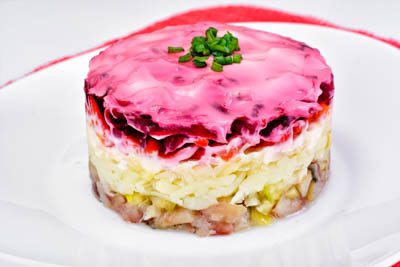

Starters
Baltic Farmers Soup

Baltisk bondesuppe - en solid starter
Main Courses
Desserts
Guzni
Guzni - Rødbede/nøddeis
Drinks
Red Wine

Et glas god Rødvin fra det tidligere USSR
Baltisk bondesuppe - en solid starter
Guzni - Rødbede/nøddeis
Et glas god Rødvin fra det tidligere USSR